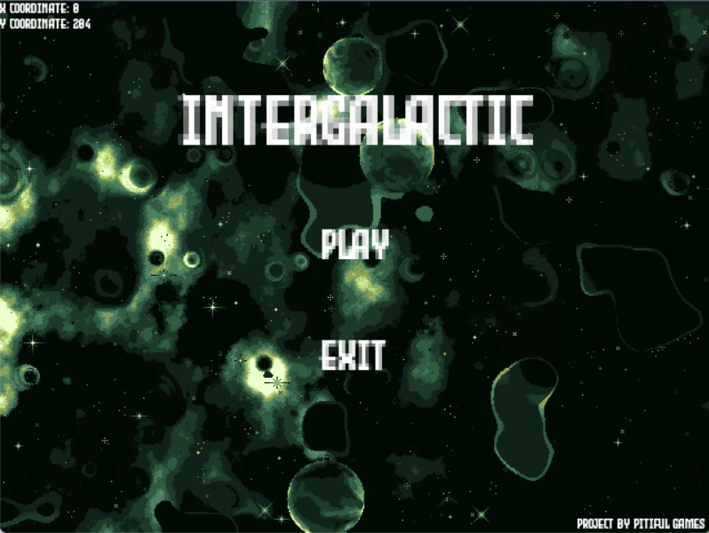

A asteroid shooter built with LÖVE2D — pilot your ship through an endless field of incoming rocks, dodge debris, and blast your way to a high score. A hands-on dive into Lua-based game development, covering game loop architecture, collision detection, and real-time input handling.
